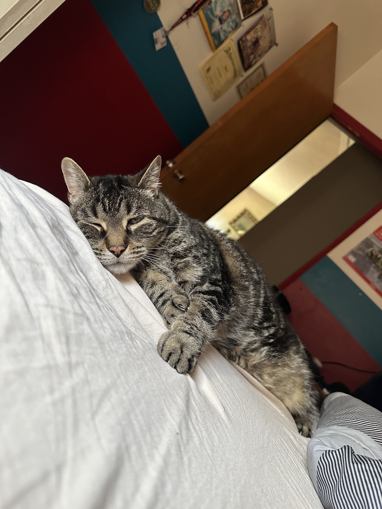

Suki
Suki is an excellent cat! She is such a diva, but I'm not immune to her charms. Sometimes she wants to play, but only with a specific toy. Sometimes she wants pets, but wants them in a specific spot. Sometimes she wants water, but will only drink it out of a cup that I've been drinking out of first.
She's pretty lazy but she always loves attention, and I always love giving it to her. I'm really happy she's in my life!
Photo Gallery


Likes
- Food
- Attention
- Crawling under blankets
Cheeto (Chicken)

Cheeto is a cat who likes to eat a lot and play a lot. He has an obsession with his grandpa (human) and tries to get outside every single day. If he isn’t causing problems, he is usually hiding in a seven foot tall cat tree and sleeping. Another name for Cheeto is Chicken, because sometimes he sits very scrunched up and ends up looking like a rotisserie chicken. He was nicknamed this by one of his friends, and now he understands it as his own name. He is about six years old and still acts like a younger cat, despite being middle-aged.
Photo Gallery


Likes
- Treats
- Exploring
- His Grandpa
Happy
Happy is an old cat. He spends a lot of his day lounging around, in whatever spot he feels is most comfortable at the time. He’s an indoor cat, but whenever we open the door to let the dogs out, he always comes running out so he can eat grass.
Happy is pretty friendly with one of my dogs, Katie. They don’t interact much, but when they do, it’s usually just friendly sniffs. My other dog, Izzy, however, loves biting at Happy. Happy usually will just run away, but sometime’s he’ll retalliate by giving Izzy a smack! It’s all in good fun though.
Photo Gallery


Likes
- Catnip
- Getting Pet
- Sleeping
Milktea

Milktea is a Scottish fold with a personality of a princess. She loves her veggies and refuses to eat anything dropped on the ground. She makes it clear when she has a demand of any sort by complaining in a loud, distinguished manner. If what she says could be translated, it probably would be, “This is atrocious, the water container has been empty for the 3rd time this week. I want to see the manager.” Despite her cuteness and royalty, she actually suffers from a genetic disorder intentionally brought upon by humans. I highly advise against keeping a Scottish fold because they are in constant pain when they reach around 2 years old. Cartilage accumulates around her paw joints and tail joints and it becomes painful for them to even walk. She is living evidence of human’s cruelty of breeding animals to look pretty while sacrificing the animals’ health.
Photo Gallery


- She loves individual corn kernels served on human hands
- She enjoys sitting royally on suitcases to claim ownership of her humans
- She prefers to be alone and sit on soft surfaces in her free time
Cooky

Cooky is an 11 month old Bernedoodle. He likes to play, run around, go on walks, eat snacks and treats (not his own dog food), get pets and belly rubs, and cuddle. You can usually find him playing with his toys in the living room, chilling in the office room with my dad, or cooling off in the garage.
He's still a baby, but he can get super hyper. Whenever someone rings the doorbell, Cooky gets really excited, barking and dashing towards the front door. He also jumps really high when he's hyper and wags his tail like crazy. Overall, though, he likes to chill and cuddle just as much as he likes to play.
Photo Gallery


Likes
- Dog cookies
- Pets and belly rubs
- Running around the house
Bacon Q. Dog

Bacon Q. Dog is a 9yr old labradoodle. He prefers to spend his days lounging among the three different beds/couches that his family has gifted him. He enjoys a walk or two around the neighborhood, as long as he can pretend that he doesn't see any of the other animals to avoid the embarrassment of not wanting to admit he has no wolf-like skills in chasing them.
At night just as the rest of the family is ready to relax, Bacon suddenly wants to release all of his energy. He will place his toys on a mini couch and frantically drag the couch around, giving his toys "a ride." There is also a lot of rolling. Lots and lots of rolling.
Photo Gallery


Likes
- Belly rubs
- Playing tug-of-war
- Sneaking onto the couch
Chief

Chief is a 9 year old pomeranian who loves to sleep as much as he can. He naps anywhere, ranging from someone's bed to the grass outside. He enjoys walking outside, but keep watch of him, otherwise he will try to consume geese poop.
He does not like any toys anymore as when he was younger, he watched a bigger toy shred his favorite one to pieces. He used to know how to roll over, but now replaced that memory with a spin as it is much easier.
Photo Gallery


Likes
- Sleeping
- Deli Chicken
- Pets behind the ear
Charlie
Charlie is friendly, but fiesty! He always wants to be in the room with you, but he might smack your hand if you pet him wrong. His three modes are sleeping, purring and nibbling a blanket, and chasing around his favorite toys! Charlie is a little prince, and he won't let you forget it.
Photo Gallery
Likes
- Nibbling on blankets
- Mouse toys
- Biting people